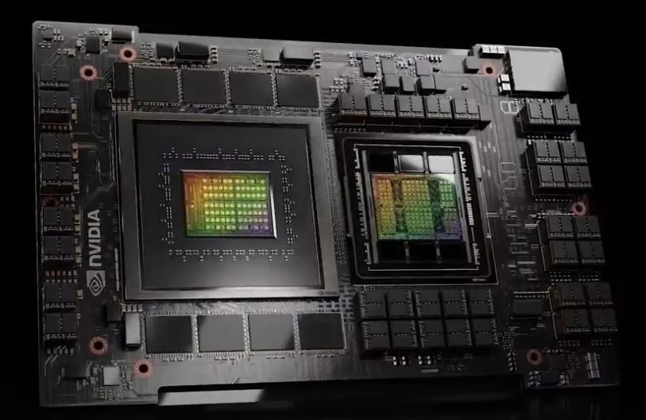
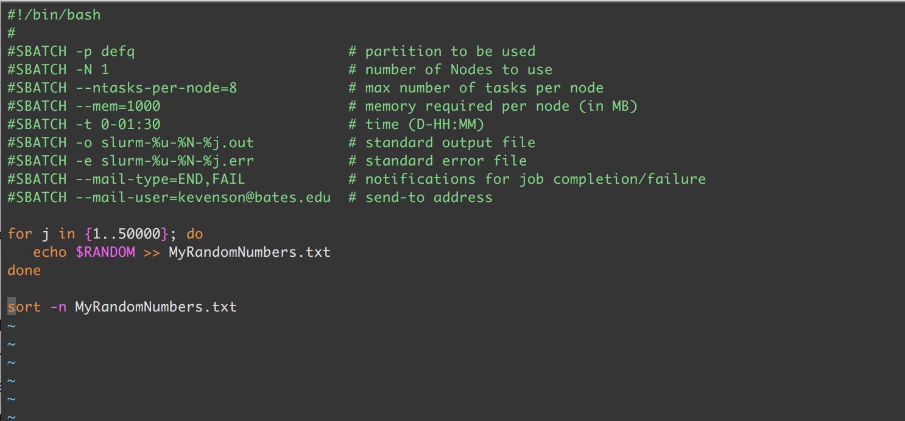
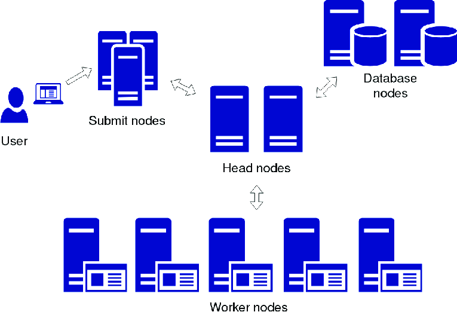

Intro to HPC and Supercomputing
Vivian Hafener
Term clarification: HPC vs Supercomputing
"High-performance computing (HPC) is the use of supercomputers and parallel computing techniques to solve complex computational problems"
Why do we need HPC?
Short answer: science!
How are supercomputers different from my laptop?
Scale

Cost

Infrastructure

Cooling
Hardware
How do supercomputers work?
So, you have some code...
then you submit a job...
then what happens next is...
Scheduling !!!!! :3

but before you run, you've usually got to wait in line
This shit rules !!! I love talking about it. If you want to learn more about scheduling shit, PLEASE ask me and we can chat sometime.
Until the time comes, and your code is running! on a big-ass computer!